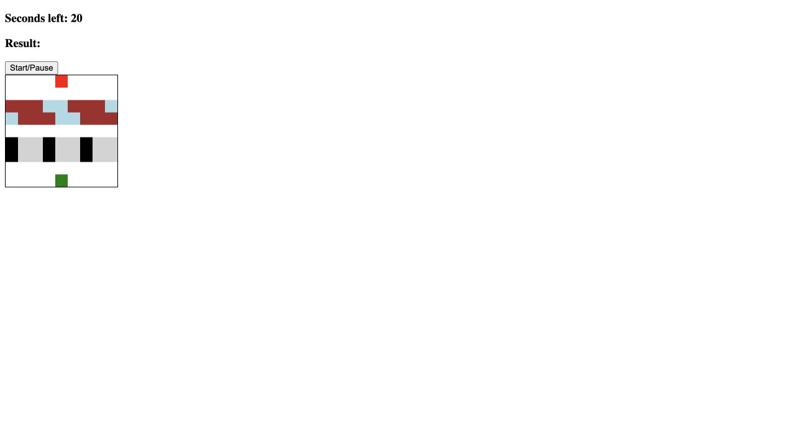

Traffic avoidance
The player reads a moving or hidden threat and chooses a safer position. Avoidance makes timing and route selection central to completing the objective.
JavaScript · HTML Canvas
Cross lanes of moving traffic and traverse river platforms to reach safety. The player chooses when to move forward and when to wait for a clearer route.

The player reads a moving or hidden threat and chooses a safer position. Avoidance makes timing and route selection central to completing the objective.
Traversal combines horizontal movement with jump timing and landing position. Platform spacing turns the level layout into a sequence of movement decisions.
Time provides an additional constraint or performance measure. It gives a compact activity a clear pace and makes the result of a run easier to compare.